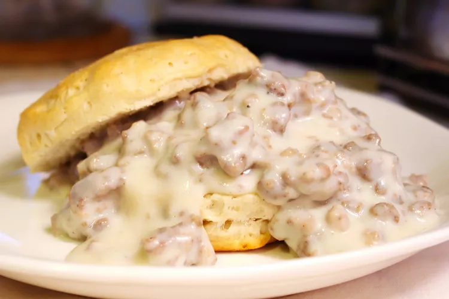

Easy Sausage Gravy and Biscuits

PHOTO: SUPER RECIPES
How to Make Biscuits and Gravy
This biscuits and gravy recipe uses jumbo buttermilk biscuits and pork sausage crumbles for a hearty, family-favorite breakfast that's ready in just 15 minutes.
This hearty, old-fashioned breakfast is perfect for beginners and pros alike!
You'll find an ingredient list and step-by-step instructions in the recipe below:
- Biscuits: This easy recipe calls for refrigerated biscuits. You could also try Basic Biscuits, if you want to go the homemade route.
- Sausage: You'll need a package of pork sausage.
- Flour: All-purpose flour acts as a thickening agent.
- Milk: Milk adds richness and works with the flour to create the perfect texture.
- Seasonings: The gravy is simply seasoned with salt and pepper.
How to Make Gravy for Biscuits and Gravy?
Here's a brief overview of what you can expect when you make homemade biscuits and gravy:
- Prepare the biscuits.
- Cook the sausage.
- Add the flour, then stir in the milk and bring to a boil.
- Reduce to a simmer and continue cooking for two minutes.
- Season to taste.
Source
Return Home